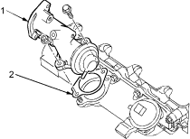
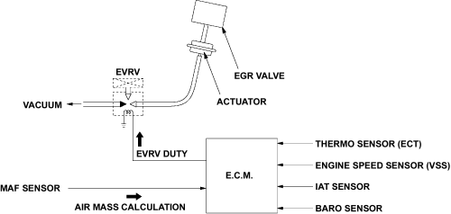

Fuel and Emissions Systems
|
11-32 |
EGR System Diagram
Exhaust gas recirculation consists of the following three tasks:
 |
|
EGR Control
The main element of the system is the EGR valve. The EGR valve feeds small amounts of the exhaust gas back into the intake manifold.
The EGR valve is controlled by the ECM and the ECM uses information from the following sensors to control the EGR valve.
The setpoint value calculation provides the setpoint value and the airmass calculation provides the actual value for controlling. During control of EGR the actual value of the air quantity for other subsystems (e.g. fuel quantity governing) is furthermore calculated. In order to reduce the run-time load, the circulation of the exhaust gas recirculation can be limited via the engine speed threshold.
EGR valve Operation and Results of Incorrect Operation
The EGR valve is designed to accurately supply EGR to the engine independent of the intake manifold to the intake manifold with an ECM controlled Electrical Vacuum Regulating Valve (EVRV).
The ECM monitors related sensor or switch condition, if EVRV solenoid has incorrect operation, DTCs P1401, P1403 or P1404 will be set.
If DTCs P1401, P1403 or P1404 are set, refer to the DTC charts.
